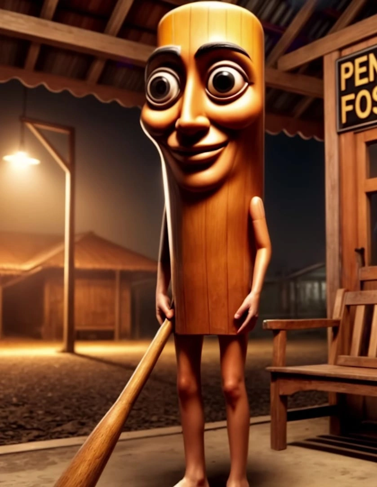

Странное существо c большими глазами трясётся под громкий бас, а голос повторяет «Сахур» . Оторваться сложно, хотя ничего особенного. Это брейнрот.
Тренд начался в конце 2024 года. Хэштег #TunTunTunSahir собрал больше 500 миллионов просмотров. ИИ помогает: программы вроде Midjourney создают новых монстров по простым описаниям. Каждый делает свою версию, и видео разлетаются.
Это всё из одной оперы! Skibidi Toilet с унитазами, которые дерутся, GigaChad с басами или взрывающиеся фигуры. Да и вся брейнрот-семья сюда подтягивается.
Зацепило, потому что TikTok показывает такие видео всем подряд, люди смотрят долго. Это как попкорн для мозга — после серьёзного хочется лёгкого. Но много контента от ИИ ведёт к тому, что мозг устаёт. Скоро, наверное, появится «Тун Тун Тун» в VR, наконец-то можно будет с ним пообщаться.